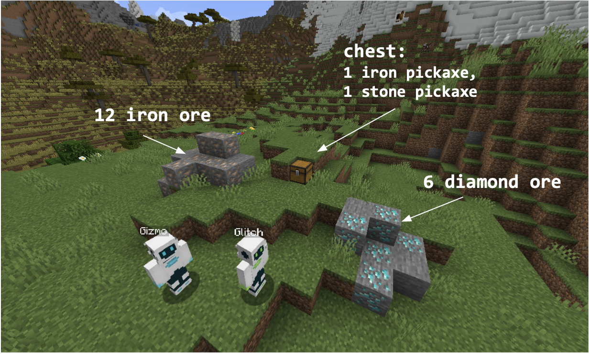
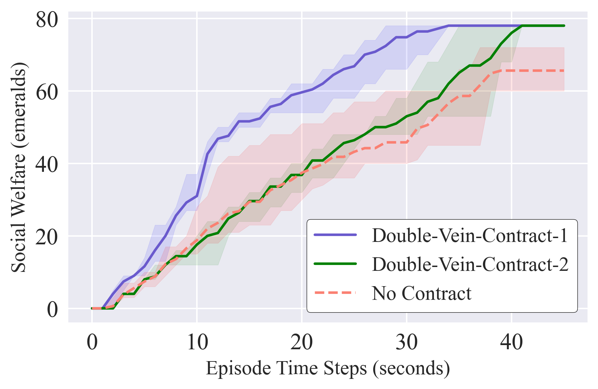
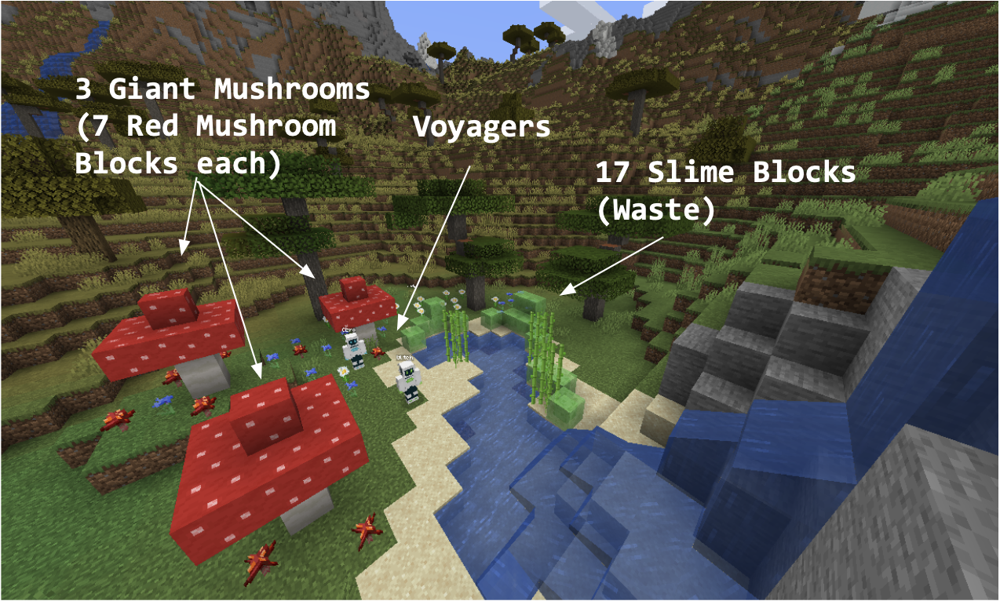
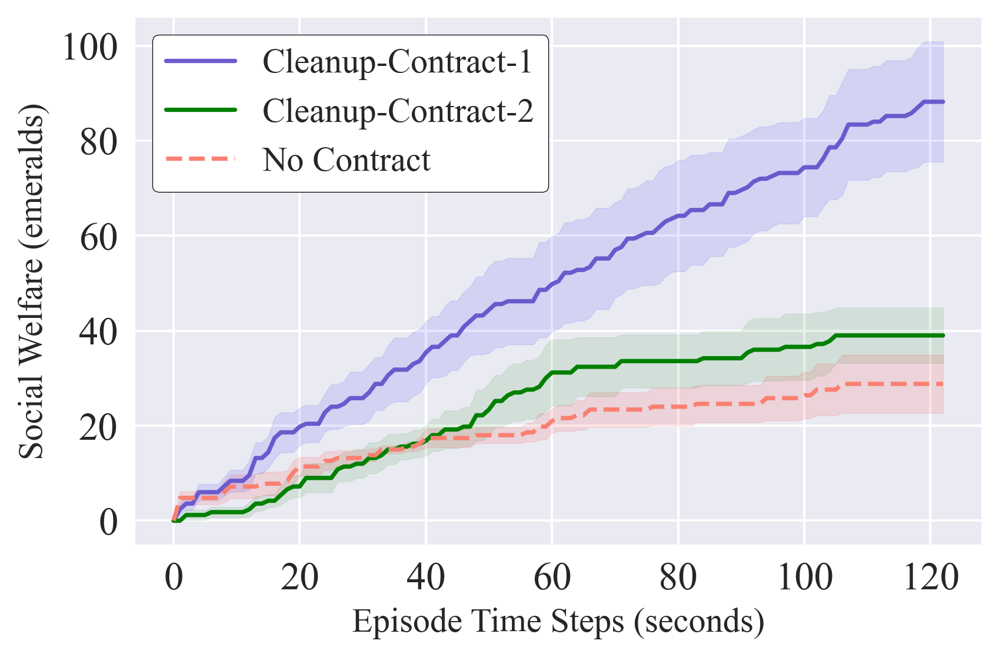

In social dilemmas, individuals would be better off cooperating but fail to do so due to conflicting interests that discourage cooperation. Existing work on social dilemmas in AI has focused on standard agent design paradigms, most recently in the context of multi-agent reinforcement learning (MARL). However, with the rise of large language models (LLMs), a new design paradigm for AI systems has started to emerge---generative agents, in which actions performed by agents are chosen by prompting LLMs. This paradigm has seen recent success, such as Voyager, a highly capable Minecraft agent. In this work, we perform an initial study of outcomes that arise when deploying generative agents in social dilemmas. To do this, we build a multi-agent Voyager framework with a contracting and judgement mechanism based on formal contracting, which has been effective in mitigating social dilemmas in MARL. We then construct social dilemmas in Minecraft as the testbed for our open-source framework. Finally, we conduct preliminary experiments using our framework to provide evidence that contracting helps improve outcomes for generative agents in social dilemmas.
Players get points for mining ore. One pickaxe (iron) can mine diamond ore while the other (stone) cannot. Diamond and iron ores are worth different amounts to different players.
 Introducing contracting in Double-Vein allows players to improve on the baseline no-contracting behavior. Both contracts shown are able to reach the socially optimal result by preferentially distributing iron and diamond to the agents who value them highest. The baseline is socially suboptimal because the resource distribution was consistent with selfishly maximizing agents.
Players collect mushroom from one of three giant mushrooms. Mushrooms only regrow if the slime in the river is below a threshold of 7 blocks.
 Generated contracts in Cleanup allow players to reach more socially optimal outcomes than baseline. Cleanup-Contract-1 performs best as it enforces full-specialization with no task switching, the most efficient strategy found. On the other hand, Cleanup-Contract-2 enforces specialization with regular task switching. We observe this comes at a cost and achieves less social welfare than Cleanup-Contract-1.
@inproceedings{
yocum2023mitigating,
title={Mitigating Generative Agent Social Dilemmas},
author={Julian Yocum and Phillip Christoffersen and Mehul Damani and Justin Svegliato and Dylan Hadfield-Menell and Stuart Russell},
booktitle={NeurIPS 2023 Foundation Models for Decision Making Workshop},
year={2023},
url={https://openreview.net/forum?id=5TIdOk7XQ6}
}